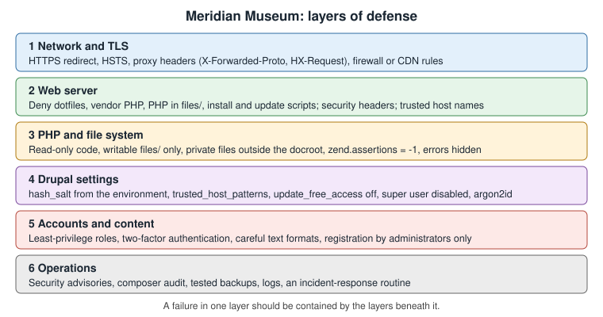

Drupal Security Hardening
|
This content was generated with the assistance of AI and should be verified against the official documentation before being relied on in production. |
A Drupal site is attacked in the same ways as any PHP application: through its accounts, through the text that visitors
and editors submit, through the code it runs, through the files it writes and through the server around it. Drupal core
has a good security record and a dedicated security team, and most successful attacks on Drupal sites come from missed
updates, over-generous permissions and misconfigured servers rather than from unknown flaws. This page is the production
hardening reference of the sub-section: every control is explained, shown with a working configuration for the Meridian
Museum site (the module meridian_collection, the theme meridian) and linked to the official documentation it
derives from. It was checked on 2026-10-30 against Drupal 11.4.x, Drush 13 and 14 and PHP 8.3 or later. Drupal 10
reaches its end of life on 2026-12-09 and Drupal 12.0.0 is planned for the week of 2026-12-07, so both are discussed as
they affect hardening, and a new site should not be started on Drupal 10.
The page is organized from the outside in: the threat model and the layers, the web server and HTTPS, the file system, the
settings that live in settings.php and services.yml, accounts and authentication, content and text formats, response
headers, and finally the operating routine of advisories, auditing and incident response. The companion pages cover the
files in detail (settings.php, services.yml and environments), the
permission system (Users, roles and permissions), Composer-based updates
(Updates, Composer and security advisories), private files
in code (File system and private files) and backups
(Backups and disaster recovery).

Threat model and what Drupal already does for you
Hardening is only useful against specific risks, so it helps to name them for the Meridian Museum site:
-
Account takeover. An attacker guesses or phishes the password of the Content Editor, Curator or Administrator, or attacks the account created during installation (user 1), which holds every permission.
-
Injected content. A visitor or low-privilege editor stores script in a node, comment, webform submission or field, which then runs in an administrator’s browser (cross-site scripting) and acts with the administrator’s session.
-
Code execution. An outdated module, an uploaded
.phpfile or a writable code directory lets the attacker run PHP. -
Information disclosure. Backups,
composer.json, exported configuration, error messages or private files are reachable by URL. -
Host header and cache attacks. A forged
Hostheader makes Drupal build password-reset links that point to the attacker’s domain. -
Downtime and data loss. Brute force, denial of service or a destructive intruder; the answer is mostly backups, which are covered elsewhere.
Drupal core already defends against several of these by default, and a hardening review starts by knowing which defaults exist and not undoing them:
-
The text format system escapes or filters output. Twig autoescaping is on, so
{{ variable }}is escaped, and|rawon user-controlled data is an XSS risk (see Twig templates and debugging). -
Form API tokens protect forms against cross-site request forgery. Since Drupal 10.3,
/user/logoutis also protected by a token, so a hostile image tag can no longer log a user out. -
New installations set account registration to "Administrators only" (since Drupal 11.1), instead of allowing visitors to register themselves.
-
Passwords are stored with a one-way salted hash, never in clear text, and session identifiers are regenerated on login.
-
The Drupal-shipped
.htaccessfiles deny access to configuration, source and backup files and disable script execution in the public files directory (details below). -
Core has brute-force protection on login (the flood control settings in
user.flood), and the Flood Control module adds a user interface for it. -
Entity queries made without an explicit
accessCheck()call throw an exception, so a developer cannot silently bypass access control (see Database API and entity queries).
Official guidance is collected under Security in Drupal, whose sub-pages are cited throughout this page.
Keep the platform supported
No setting compensates for software that no longer receives fixes. Drupal follows semantic versioning: a feature minor release ships every six months, in June and December, with bugfix releases usually on the first Wednesday of a month and security releases usually on the third. Security advisories cover only the two most recent minors of the current major. Release notes of Drupal 11.4.11 (published on 2026-10-21) state that Drupal 11.4.x is covered for security until June 2027.
-
Drupal 10 ends on 2026-12-09. Drupal 10.6 is the last minor, and from 10.6 the upgrade target is Drupal 11.3 or later.
-
Drupal 12.0.0 is planned for the week of 2026-12-07. It does not accept an upgrade from 11.2 or earlier, so anything below 11.3 must first move to Drupal 11.3 or later (11.4 or 11.5 are recommended starting points). See Preparing for Drupal 12 and Versions, release cycle and support.
-
Contributed projects are covered by the same advisory process only when they are marked as stable and have the "covered by the security advisory policy" badge on their project page. A module with a development or alpha release only is not covered, and a module that is no longer maintained is a liability even when it still works.
-
PHP, the web server and the database need their own updates. Hosting guidance is in Requirements and hosting. Drupal 11 removed support for IIS (in 11.0) and deprecated Windows as a production platform (in 11.3). Drupal 12 requires PHP 8.5.
Older books such as Drupal 10 Development Cookbook (2023) and Drupal 10 Masterclass (2023) were written for Drupal 10.0
and 10.1 on PHP 8.1 and treat Drupal 7 as still supported. PHP 8.1 and Drupal 7 no longer receive security fixes, and
neither book covers the hardening changes described below (the super user parameter, argon2id, zend.assertions, the
removal of in-browser module installation). For a security checklist the current official documentation is the reference.
The web server
Document root and the files that must not be served
A Composer project (see Project layout and local development)
keeps vendor/, composer.json, composer.lock, the configuration sync directory and private files outside the
web/ document root. That layout is itself the strongest protection of this section: a file that is not under the
document root cannot be requested at all, whatever the web server configuration says. The server must point at web/,
never at the project folder. A project created from the abandoned drupal/legacy-project template, with the document
root in the repository root, exposes vendor/ and composer.json, and should be moved to the recommended layout.
The official page
Moving all PHP files out of the docroot
describes going further and keeping only index.php and static assets in the served folder. Most projects do not need
this, because the scaffold already makes index.php the only PHP entry point that matters. The entry points that deserve
attention are index.php, /update.php and /core/install.php, discussed below.
What the Apache .htaccess files do
On Apache, the .htaccess file that Drupal’s scaffold writes into web/ carries the main protections. The scaffold copies
it from core/assets/scaffold/files/htaccess, and it is regenerated by composer install and composer update, so edits
belong in the Composer scaffold configuration and
not in the generated file. Its main duties are:
-
deny direct requests for source and configuration files by extension (
.module,.install,.theme,.twig,.yml,.sql,.shand similar, including editor leftovers such as~,.bakand.swp); -
deny
composer.json,composer.lock,package.json,yarn.lock,web.configand version-control metadata at the document root; -
disable directory listing (
Options -Indexes) and set secure defaults for content types and character sets; -
turn off PHP assertions and a few legacy PHP flags for
mod_php(see the section onzend.assertionsbelow); -
send requests for missing files to
index.php(clean URLs) and add theVary: Accept-Encodinghandling for compressed assets.
Two things are easy to forget. First, .htaccess files are honored only when the virtual host sets AllowOverride All
(or at least AllowOverride FileInfo Options AuthConfig Limit for the document root). If it is None, all of these
protections silently disappear and no error is shown. Second, the automatically generated .htaccess file inside
sites/default/files/ is rewritten by Drupal whenever the file system is checked and protects the public files folder; it
must stay in place and, as described in the file permissions section, must not be owned by the web server user.
Preventing execution of uploaded PHP
Content editors upload files into sites/default/files/. The directory is writable by the web server by design, so the
web server must never execute anything from it. The .htaccess file that Drupal creates in the public files directory
contains these rules:
# sites/default/files/.htaccess (created by Drupal, keep it read-only)
# Turn off all options we don't need.
Options -Indexes -ExecCGI -Includes -MultiViews
# Set the catch-all handler to prevent scripts from being executed.
SetHandler Drupal_Security_Do_Not_Remove_See_SA_2006_006
<Files *>
# Override the handler again if we're run later in the evaluation list.
SetHandler Drupal_Security_Do_Not_Remove_See_SA_2013_003
</Files>
# If we know how to do it safely, disable the PHP engine entirely.
<IfModule mod_php.c>
php_flag engine off
</IfModule>With PHP-FPM, avoid a blanket ProxyPassMatch for .php files, because it takes precedence over .htaccess handlers
and defeats the rules above. Use a FilesMatch handler instead, which .htaccess can still override:
<FilesMatch \.php$>
SetHandler "proxy:fcgi://127.0.0.1:9000"
</FilesMatch>The official page documents Apache only, so nginx and other servers need an explicit equivalent (shown next).
The nginx equivalents
nginx ignores .htaccess completely. Every protection above therefore has to be reproduced in the server configuration,
and it is the single most common reason that nginx-hosted Drupal sites expose files that Apache sites do not. The
following server block for the Meridian Museum denies the same categories of files, blocks PHP in the files directories,
and passes only the front controller and the two administrative scripts to PHP-FPM:
server {
listen 443 ssl;
http2 on;
server_name www.meridian-museum.example;
root /var/www/meridian/web;
index index.php;
# TLS certificate paths are managed by the host (for example certbot).
ssl_certificate /etc/ssl/meridian/fullchain.pem;
ssl_certificate_key /etc/ssl/meridian/privkey.pem;
# Never reveal the server version.
server_tokens off;
# Allow ACME and other well-known URLs, deny every other hidden file or directory.
location ^~ /.well-known/ { allow all; }
location ~ (^|/)\. { return 403; }
# Source, configuration and backup files.
location ~* \.(engine|inc|install|make|module|profile|po|sh|sql|theme|twig|tpl(\.php)?|xtmpl|yml)(~|\.sw[op]|\.bak|\.orig|\.save)?$ {
return 404;
}
location ~ ^/(composer\.(json|lock)|package\.json|yarn\.lock|web\.config)$ { return 404; }
# Never execute PHP from the files directories or from vendored code.
location ~ ^/sites/[^/]+/files/.*\.php$ { deny all; }
location ~ ^/sites/[^/]+/private/ { return 403; }
location ~ /vendor/.*\.php$ { deny all; return 404; }
location / {
try_files $uri /index.php?$query_string;
}
# Image styles are generated on first request.
location ~ ^/sites/[^/]+/files/styles/ {
try_files $uri /index.php?$query_string;
}
# Only these PHP scripts are entry points.
location ~ ^/(index|update)\.php$ {
fastcgi_split_path_info ^(.+?\.php)(|/.*)$;
include fastcgi_params;
fastcgi_param SCRIPT_FILENAME $document_root$fastcgi_script_name;
fastcgi_param PATH_INFO $fastcgi_path_info;
fastcgi_pass unix:/run/php/php8.3-fpm.sock;
}
location = /core/install.php { return 404; }
location ~ \.php$ { return 404; }
}Source: Preventing execution of untrusted PHP
(the nginx directives are an adaptation of the Apache rules; test them with nginx -t and the curl smoke test at the
end of this section before relying on them).
Two details in this configuration deserve explanation. try_files $uri /index.php?$query_string is what makes clean URLs
work and sends every non-file request to Drupal, and the final location ~ \.php$ returns 404 for any other .php path,
which neutralizes the "upload a shell, then request it" attack even if a script reaches a public folder. Returning 404 for
/core/install.php after the site is installed removes a script that otherwise tells visitors the site is already
installed. Leave update.php reachable only if you run database updates in the browser; sites that deploy with
drush deploy should remove it from that location pattern (see the section on not exposing update.php and install.php).
Behind a CDN, load balancer or proxy that terminates TLS, from Drupal 11.3 the proxy must pass the HTMX request headers
(HX-Request, HX-Redirect and related ones) unchanged, because core uses htmx for parts of the administrative
interface, and the proxy must be listed in reverse_proxy_addresses (next section) so that Drupal trusts its
X-Forwarded-* headers.
A smoke test for the web server
A deployment is not hardened until it has been tested from outside. These commands, run from any machine, should all report the status that is shown in the comments:
BASE=https://www.meridian-museum.example
curl -s -o /dev/null -w '%{http_code}\n' "$BASE/core/install.php" # 404 (or 403) on an installed site
curl -s -o /dev/null -w '%{http_code}\n' "$BASE/composer.json" # 404
curl -s -o /dev/null -w '%{http_code}\n' "$BASE/vendor/autoload.php" # 404
curl -s -o /dev/null -w '%{http_code}\n' "$BASE/sites/default/settings.php" # 403 or 404, never 200
curl -s -o /dev/null -w '%{http_code}\n' "$BASE/sites/default/files/.htaccess" # 403 or 404
curl -s -o /dev/null -w '%{http_code}\n' "$BASE/core/CHANGELOG.txt" # 404 (hides the exact version)
curl -sI "$BASE/" | grep -iE 'strict-transport|x-content-type|x-frame|content-security|referrer|server|x-generator'
curl -s -o /dev/null -w '%{http_code}\n' -H 'Host: attacker.example' "$BASE/" # 400 once trusted hosts are setHiding version clues is defence in depth, not a security control: it only slows down automated scanners. Drupal’s own
documentation says as much, and the real protection is being up to date. Core sends an X-Generator header and a
meta name="Generator" tag; both are on purpose and harmless, but a reverse proxy may remove them, and the CHANGELOG.txt
files should not be served.
HTTPS and secure cookies
Redirecting to HTTPS and enabling HSTS
Everything on the Meridian site, including anonymous browsing, is served over HTTPS. The usual setup is a port 80 virtual
host that does nothing except redirect, plus an HSTS header so that browsers refuse plain HTTP afterwards. The official
page on Enabling HTTP Secure (HTTPS)
describes the Apache virtual host redirect, the .htaccess RewriteRule for hosts where the server configuration is not
editable, and a redirect in settings.php. A redirect that begins on plain HTTP is itself open to a man-in-the-middle
attack on the first request, which is why the page recommends HSTS and, for public sites, submission to the browser
preload list.
<VirtualHost *:80>
ServerName www.meridian-museum.example
Redirect permanent "/" "https://www.meridian-museum.example/"
</VirtualHost>
<VirtualHost *:443>
ServerName www.meridian-museum.example
DocumentRoot /var/www/meridian/web
<Directory /var/www/meridian/web>
AllowOverride All
Require all granted
</Directory>
Header always set Strict-Transport-Security "max-age=31536000; includeSubDomains"
</VirtualHost>Source: Enabling HTTP Secure (HTTPS)
Start HSTS with a short max-age (for example one day, then one week) while testing, and add includeSubDomains and
preload only after every subdomain, including the staging site, serves valid HTTPS: a long HSTS lifetime on a broken
certificate locks visitors out and cannot be undone from the server. The Security Kit module (below) can send the same
header from the Drupal side.
Reverse proxies and the HTTPS detection problem
When TLS ends at a load balancer, PHP sees an HTTP request on port 80. Symfony’s request object (and therefore Drupal)
believes the connection is not secure, builds http:// URLs, never sets the secure flag on the session cookie and may
fall into a redirect loop. The fix is to declare the proxy addresses so that Drupal trusts the forwarded headers:
// web/sites/default/settings.php (excerpt)
$settings['reverse_proxy'] = TRUE;
$settings['reverse_proxy_addresses'] = ['10.0.0.10', '10.0.0.11'];
// Trust only the headers the proxy really sets.
$settings['reverse_proxy_trusted_headers'] =
\Symfony\Component\HttpFoundation\Request::HEADER_X_FORWARDED_FOR |
\Symfony\Component\HttpFoundation\Request::HEADER_X_FORWARDED_HOST |
\Symfony\Component\HttpFoundation\Request::HEADER_X_FORWARDED_PORT |
\Symfony\Component\HttpFoundation\Request::HEADER_X_FORWARDED_PROTO;Source: Enabling HTTP Secure (HTTPS)
and the commented examples in default.settings.php.
Never set reverse_proxy to TRUE without the address list: any client could then forge X-Forwarded-For and fake its
IP address, which defeats flood control, the log’s client addresses and IP-based restrictions. The address list is an
allow-list of proxies, and the reverse proxy configuration reference is in
settings.php, services.yml and environments.
Session cookie settings
Drupal sets the secure attribute of the session cookie automatically when the request is HTTPS, as the HTTPS page above
states: the session cookie is then sent only over TLS, and the cookie name is prefixed with S so that an HTTP and an
HTTPS variant of the same site cannot collide. The other attributes come from the session.storage.options parameter of
services.yml:
# web/sites/default/services.yml
parameters:
session.storage.options:
# Lifetime of the session on the server, in seconds (about 2.3 days).
gc_maxlifetime: 200000
# 0 = until the browser is closed; the default keeps the cookie for about 23 days.
cookie_lifetime: 0
# Lax keeps one-time login links from e-mail working; Strict would break them.
cookie_samesite: LaxSource: Session management
The cookie is HttpOnly so that JavaScript cannot read it. A cookie_lifetime of 0 is a good setting for a site with
privileged editors, because the cookie then disappears when the browser closes, while the server-side gc_maxlifetime
limits how long an abandoned session can be reused. Keep SameSite=Lax: it prevents the cookie from being sent on
cross-site subrequests (a layer against cross-site request forgery) without blocking a visitor who follows a link in an
e-mail. Strict would drop the session on that first navigation. The Secure Login module mentioned in older documentation
is for mixed HTTP and HTTPS sites and is not needed on an HTTPS-only site.
File permissions and ownership
The principle from the official page
Securing file permissions and ownership
is that the web server should not be able to edit or write the files it executes. If PHP-FPM or Apache can rewrite a .php
file, any code-execution flaw becomes a permanent backdoor. The page recommends this layout on Linux:
| Item | Mode | Notes |
|---|---|---|
Directories of the Drupal root |
|
Owner is an administrative user (for example |
Files of the Drupal root |
|
Read-only for the web server through the group; no access for others. |
|
|
The only place the web server needs to write, together with the temporary and private directories. |
Files inside |
|
Written by the web server. |
|
|
Read-only, and the owner must not be the web server user, or PHP could rewrite its own safeguards. |
|
|
Contains the database credentials; remove read access for "other". The page does not name an exact mode, so |
The ownership split is the point: the deploy user owns the code, the web server group can only read it, and others have no
access (on shared hosts, where one compromised account must not read another site, the page advises giving the web server
group access only, never "world" access). A script that applies the layout to the Meridian project looks like this:
#!/usr/bin/env bash
# Run from the project root (the folder that contains composer.json and web/).
set -euo pipefail
DEPLOY_USER=deploy
WEB_GROUP=www-data
ROOT=web
sudo chown -R "$DEPLOY_USER":"$WEB_GROUP" "$ROOT"
sudo find "$ROOT" -type d -exec chmod 750 {} +
sudo find "$ROOT" -type f -exec chmod 640 {} +
# The web server writes only to the files directories.
sudo find "$ROOT"/sites -type d -name files -exec chmod 770 {} +
sudo find "$ROOT"/sites -type d -name files -exec chmod -R ug=rwX,o= {} +
sudo find "$ROOT"/sites -type f -path '*/files/*' ! -name .htaccess -exec chmod 660 {} +
# Keep the protective .htaccess files read-only and not owned by the web server user.
sudo find "$ROOT"/sites -name .htaccess -path '*/files/*' -exec chmod 440 {} +
# Make settings.php read-only after installation.
sudo chmod 440 "$ROOT"/sites/default/settings.php
sudo chmod 550 "$ROOT"/sites/defaultNotes on using this layout day to day:
-
Run the commands from the right directory. The official page warns that running them elsewhere changes the wrong files.
set -uand a relativeROOTmake the script fail in the wrong place, but always checkpwdfirst. -
sites/defaultandsettings.php. During installation Drupal needs to writesettings.phpand create thefilesfolder, so the installer asks for write permission onsites/defaultand then tries to makesettings.phpread-only. Restore the strict mode afterwards, and makesites/defaultnon-writable (chmod 550) so that an attacker cannot replace the file. To change settings during maintenance, temporarily grant write access to the deploy user, not to the web server. Drupal’s status report warns whensettings.phpis writable. -
file_chmod_directoryandfile_chmod_file.$settings['file_chmod_directory'](documented as0775) and$settings['file_chmod_file'](documented as0664) control the modes that Drupal gives to the directories and files it creates, overriding the processumask. Set them to0770and0660if no other group needs access. -
New code. Set the permissions before adding a module or theme, not afterwards, so that there is never a window in which the new code is writable by the web server.
-
Windows. The page gives an equivalent ACL: SYSTEM read-only except on the
filesfolders, the administrator with modify rights, and no other users. Windows production hosting is deprecated since Drupal 11.3.
Read-only code and Composer-based updates
A read-only codebase has a cost, and it should be a conscious one. Since Drupal 10.4/11.0 modules and themes can no longer
be uploaded through the administrative interface, and since 11.2 core cannot be updated from it either, so on a
conventional deployment nothing in the browser needs to write code at all: updates arrive through composer update on a
build machine or in CI, as described in
Deployment and CI/CD. The two exceptions are Automatic Updates and Project
Browser. They use core’s Package Manager, which needs a writable codebase, so a site that enables them has intentionally
relaxed this rule and should compensate with other controls (see
Automatic Updates and Project Browser). Automatic Updates
applies patch-level core updates only, does not support multisite and does not run unattended from cron. Its updates of
contributed projects are marked as not ready for production, so it is a convenience for small sites, not a replacement for
a deployment pipeline.
Generated PHP files and the Twig cache
Drupal writes some PHP to disk: the compiled Twig templates, the container cache and the optional PHP storage for
Twig. The official page
Security of generated PHP files
explains the default protection: file names include a hash built from a secret and the directory’s modification time,
and Drupal refuses to include a file that is newer than its directory, so an attacker who can overwrite a file but not
change the secret cannot plant valid code. The secret lives in settings.php, and a leaked secret means the site is
already compromised. The page also recommends generating the files on a staging machine and using a read-only storage on
production, which fits a deployment where the web server cannot write code. In practice, keep the compiled-template
directory outside the web root (the default is under the temporary directory or sites/default/files/php, which is
protected by the same .htaccess rules) and make sure no other tenant on the machine can read it.
Private files
The public files directory is served directly by the web server, so every file in it is reachable by anyone who knows or guesses the URL. Anything that needs access control, such as the Museum’s loan agreements, curator documents or webform attachments, goes in the private file system. Private files are streamed through PHP after Drupal checks access, and the directory must be outside the document root:
// web/sites/default/settings.php (excerpt)
// Outside web/, writable by the web server, never reachable by URL.
$settings['file_private_path'] = '../private';
$settings['file_temp_path'] = '/tmp/meridian';
// Directories and files that Drupal creates are private to the web server group.
$settings['file_chmod_directory'] = 0770;
$settings['file_chmod_file'] = 0660;Source: Uploaded file management
With the setting in place, a file field can use the "Private files" storage in its field settings, and the URL becomes
/system/files/.... Pitfalls and good practice:
-
Setting the path does not protect existing files. Changing a field’s storage from public to private moves nothing, and files that were public stay reachable at their old URL. Change the setting before the first upload or migrate the files and redirect the old paths.
-
The path must not be inside the document root. Drupal checks it in the status report ("Private file system" row) and also writes a
.htaccessfile to deny access, but a misconfigured nginx ignores that file. An nginxlocationthat returns 403 for the private directory (shown in the previous section) is a second safety net. -
Access is decided by
hook_file_download(). Core grants access to a private file only if some module returns headers for it. File fields do this through the entity access system: a user can download a file when they can view an entity that references it. A custom module can add its own rule. In the Meridian Museum, loan agreements are only for the Curator role:
<?php
declare(strict_types=1);
namespace Drupal\meridian_collection\Hook;
use Drupal\Core\Hook\Attribute\Hook;
use Drupal\Core\Session\AccountProxyInterface;
/**
* Access rules for private files owned by the collection module.
*/
final class FileDownloadHooks {
public function __construct(
private readonly AccountProxyInterface $currentUser,
) {}
/**
* Implements hook_file_download().
*
* Return -1 to deny, an array of headers to allow, NULL to let other modules decide.
*/
#[Hook('file_download')]
public function fileDownload(string $uri): array|int|null {
if (!str_starts_with($uri, 'private://loan-agreements/')) {
return NULL;
}
if ($this->currentUser->hasPermission('view loan agreements')) {
return ['Content-Type' => 'application/pdf', 'Cache-Control' => 'private'];
}
return -1;
}
}Object-oriented hook classes (autowired, in src/Hook) are supported from Drupal 11.1, and hook_file_download can be
implemented that way. A site that must also run on Drupal 10.x adds a #[LegacyHook] wrapper (see
Hooks and object-oriented hooks). Two warnings apply to any file serving code:
never build a path from user input without validating the scheme, and set a safe Content-Type, as untrusted content
served with an HTML type from the site’s own domain can run script with the site’s cookies.
Settings in settings.php and services.yml
A hardened settings.php
The following excerpt gathers the security-relevant settings. Secrets are read from the environment (the variable names are Meridian’s own), and the file is committed without any secret value:
// web/sites/default/settings.php (excerpt)
// Used in one-time login links, form tokens and signed values. Long, random, per environment.
$settings['hash_salt'] = getenv('MERIDIAN_HASH_SALT');
// Only answer to the host names the museum owns (see the next section).
$settings['trusted_host_patterns'] = [
'^www\.meridian-museum\.example$',
'^meridian-museum\.example$',
'^staging\.meridian-museum\.example$',
];
// update.php must never be open to anonymous users.
$settings['update_free_access'] = FALSE;
// Loaded services.yml for the project (super user, password hashing and so on).
$settings['container_yamls'][] = $app_root . '/' . $site_path . '/services.yml';
// Hide error messages from visitors; send details to the log instead.
$config['system.logging']['error_level'] = 'hide';
// Configuration is exported outside the document root.
$settings['config_sync_directory'] = '../config/sync';
$settings['file_private_path'] = '../private';
// Extra environment-specific overrides, kept out of version control.
if (file_exists($app_root . '/' . $site_path . '/settings.local.php')) {
include $app_root . '/' . $site_path . '/settings.local.php';
}The options in this excerpt:
-
hash_saltis a private key used for one-time login links, form and CSRF tokens, image style tokens and other signed values. If it leaks, an attacker can forge them. It must be long, random, unique per environment and not committed; never copy it between production and staging. Generate one withdrush eval 'echo Drupal\Component\Utility\Crypt::randomBytesBase64(55);'and store it in the secret store of the host (see settings.php, services.yml and environments). Changing it invalidates pending reset links and outstanding image style tokens. -
update_free_accessisFALSEby default. When it isTRUE, anyone can run/update.phpwithout logging in. It is meant for broken sites that cannot log in, only for a few minutes, and it should never stay on. -
error_levelcontrols the display of PHP errors and Drupal messages.hideshows nothing to visitors, while the error details still go to the log;verboseshould never be set on production, because stack traces reveal paths, queries and module names. -
Database credentials come from the environment (
getenv()) or from the host’s secret manager. Do not paste real values into a committedsettings.php; an exportedsettings.phpwith credentials is the most common leak in public repositories.
Trusted host patterns
Drupal builds absolute URLs, such as the password-reset link e-mailed to a Curator, from the Host header of the request.
An attacker who can send a forged header can make Drupal e-mail a link that points to the attacker’s own site, with a valid
token. $settings['trusted_host_patterns'] is a list of regular expressions without delimiters. If the request’s host does not
match any of them, Drupal answers with HTTP 400 and the message "The provided host name is not valid for this server."
Pattern syntax is the usual one: ^ anchors the start, $ the end, and every literal dot must be escaped with a
backslash. The official example for a single domain is '^www\.example\.com$'.
// Production: exact names only.
$settings['trusted_host_patterns'] = [
'^www\.meridian-museum\.example$',
'^meridian-museum\.example$',
];
// DDEV (settings.ddev.php normally handles this; shown for reference).
$settings['trusted_host_patterns'][] = '^meridian\.ddev\.site$';
// A host from the environment is useful when DEV, TEST and PROD differ.
if ($host = getenv('DRUPAL_TRUSTED_HOST')) {
$settings['trusted_host_patterns'][] = '^' . preg_quote($host, '/') . '$';
}Source: Trusted host settings
Pitfalls that cause either outages or no protection at all:
-
An unescaped dot or a missing anchor.
meridian-museum.example(no anchors, no escaping) matchesmeridian-museum.example.attacker.net. Always use^...$and\.. -
Health checks and CDNs. A load balancer that probes by IP address or by an internal name receives HTTP 400 and the instance is marked unhealthy. The official page notes this for Kubernetes health checks: either allow the probe’s host or configure the probe to send the real
Hostheader. -
Command line. Drush has no
Hostheader, so trusted host checks apply only to web requests. Use the--urioption of Drush when a command builds URLs. -
Absent setting. Drupal’s status report warns when the setting is missing; do not ignore the warning.
Disabling update.php access and not exposing installers
Two scripts change the site and therefore deserve extra care:
-
/core/install.phpis the installer. Once the site is installed it only shows that the site is already installed, but returning 404 for it at the web server (as in the nginx example) removes a fingerprinting hint and an attack surface. -
/update.phpruns database updates. By default it requires the administrative permission "Administer software updates" (and user 1 satisfies that permission unless the super user is disabled), and it is open to everyone only when$settings['update_free_access']isTRUE. On a site that deploys withdrush deploy, which runsupdatedb,config:import,cache:rebuildand the deploy hooks, nobody needs the browser-based script, so deny it at the web server (removeupdatefrom the location pattern above, or addlocation = /update.php { return 404; }) and let CI run Drush.
Neither script accepts input that gives an attacker code execution on a correctly configured site. The concern is
availability and information disclosure, plus the case in which update_free_access was left TRUE for an emergency.
Accounts, roles and user 1
The Administrator role and least privilege
Roles in the Meridian site follow the people who use it: Content Editor, Curator, Reviewer, Member and Administrator (see Users, roles and permissions). The hardening rules are simple to state and easy to erode:
-
Few administrators. Assign the Administrator role to the minimum number of people. Daily work (editing exhibitions, moderating content) needs only an editorial role.
-
Permissions marked "Warning: Give to trusted roles only; this permission has security implications". Permissions such as "Administer permissions", "Administer modules", "Administer users", "Use the Full HTML text format" and "Bypass content access control" are not for editors. Review them with the permissions page at
/admin/people/permissions. -
Review roles from the command line. Drush lists and edits roles, which makes a review scriptable:
drush role:list
drush role:perm:remove anonymous 'access user profiles'
drush role:perm:add curator 'view loan agreements'
drush user:information curator1Source: Drush: role:list
-
The Administrator role is special. In the role settings (
/admin/people/role-settings) one role is marked as the administrator role. Drupal automatically gives that role every permission, including those of modules enabled later, and a user registered while that role exists inherits all of it. Keep it for people, not for service accounts, and review it after every module addition. -
Registration. New installations use "Administrators only" for account creation (Drupal 11.1 and later). Keep it unless members must self-register, and then require e-mail verification and an approval step.
Securing user 1
The account that the installer creates (user ID 1) has every permission and, unless the site disables the feature, ignores
the permission system. The official page
Securing the admin super user (#1)
advises treating it like root:
-
use separate administrator accounts created through the Administrator role;
-
do not name the account
adminoradministrator; -
block repeated login attempts (core’s flood control, or the Flood Control module for tuning);
-
block user 1 when Drush is available, because Drush can do the maintenance work;
-
give the account a long random password;
-
optionally lock it down with the Paranoia module and enforce rules with Password Policy;
-
restrict logins by IP address with a contributed module when administrators work from known networks;
-
disable the super user policy entirely (Drupal 10.3 and later).
Disabling the policy is the strongest choice. With the parameter below, user 1 becomes an ordinary account: it has only the
permissions of its roles, so it must have the Administrator role to administer anything. The page notes that the file must
be a real services.yml (copying default.services.yml is the usual start, and editing the default file has no effect),
and that settings.php has to load it:
# web/sites/default/services.yml
parameters:
# Drupal 10.3 and later: user 1 no longer bypasses permission checks.
security.enable_super_user: false// web/sites/default/settings.php
$settings['container_yamls'][] = $app_root . '/' . $site_path . '/services.yml';After changing the parameter, remove the Administrator role from user 1 if it should not hold it, then rebuild caches
(drush cr, or visit core/rebuild.php). If you lock yourself out, set the value back to true, rebuild caches and user 1
is a super user again. The same page shows how to block and unblock the account and how to make drush user:login use
another administrator by default:
drush user:block admin # replace with the real account name
drush user:unblock admin # to re-enable it in an emergency
drush user:login --name=ops-admin # one-time login link for a named administrator# drush/drush.yml
command:
user:
login:
options:
name: ops-adminTwo related defaults help. The one-time login link generated by drush user:login expires and is single use, and it is
built from the host that Drush is given, so pass --uri when running it from a server.
Passwords
How Drupal stores passwords
Drupal never stores a password; it stores a salted one-way hash and compares hashes on login. Before Drupal 12 the hashing
service uses PHP’s default password algorithm (bcrypt). Hashes created by Drupal 7 ($S$ phpass hashes) are still
verified and are silently re-hashed with the current algorithm on the user’s next login, which is why a migrated site
becomes stronger as users return. A password hash stored today is rehashed whenever the configured algorithm changes: the
next successful login replaces the old hash.
Drupal 12 changes the default to argon2id. The change record
Default password hashing algorithm is now argon2id introduces two parameters
in services.yml: password.algorithm, whose valid values are argon2i, argon2id and 2y (bcrypt), with null
meaning PHP’s default, and password.options, which is passed to password_hash() and rarely needs to be set. Drupal 12
defaults to argon2id. Existing passwords are re-hashed with it automatically on each user’s next login. Drupal 12
requires PHP 8.5, so argon2 support is expected to be present, but a site can check its PHP build, and fall back to bcrypt
if needed. The change record also notes that a site on the 11.4 line may opt in early by setting the parameter, and that
the contributed PHP Password module (3.0.0 series) provided the feature earlier.
# Which algorithms does this PHP build support?
php -r 'echo implode("\n", password_algos()) . "\n";'# web/sites/default/services.yml (Drupal 11.4 opt-in; the default from 12.0.0)
parameters:
password.algorithm: argon2id
# Leave password.options empty unless you have measured a need to tune the cost.
password.options: []Operational consequences of the switch: a stronger algorithm costs more memory and CPU per login, so load-test the login path on small hosting plans; an argon2 hash cannot be verified by software that lacks argon2 support, so a rollback to an older PHP build breaks logins until the setting is changed back; and because Drupal 12 only accepts upgrades from 11.3 or later, enabling the parameter on 11.4 early is a safe way to rehearse the change.
Password policy beyond hashing
Core does not enforce password strength beyond a visual meter. Common practice, backed by the NIST guidelines reviewed on US NIST Password Guidelines review, is to favor length over composition rules, to check against lists of leaked passwords, and not to force periodic changes. The Password Policy module adds length, character and history rules, and the Pwned Passwords module checks candidate passwords against a breach list. Authentication improvements are described in Authentication improvements. Credentials used by the site to talk to other systems (the collections-management API key, the SMTP password) are secrets of a different kind and follow Securing Authentication Credentials: keep them in the environment or in the Key module, never in exported configuration.
Two-factor authentication
A password is a single point of failure, so the Administrator, Curator and Content Editor roles of the Meridian site should
use a second factor. Core has no two-factor feature; the established contributed module is Two-factor Authentication
(TFA) (drupal/tfa). According to its project page it supports Drupal 10 and 11 in the stable 1.x series (1.13 on
2026-09-16), offers time-based one-time passwords (TOTP, the codes of authenticator apps) and HMAC-based ones (HOTP),
a pluggable design with fallback methods, context-specific exceptions, flood control for one-time logins and
role-based requirements, plus add-on projects for SMS, e-mail codes, Duo and a headless REST endpoint. The e-mail and
Duo add-ons are not covered by the security advisory policy. The 2.x line was alpha at the time of checking and its latest
alpha is marked "DO NOT USE" because of known security issues, so production sites stay on 1.x. The module notes that
contributed modules that bypass the login form can bypass the second factor, which is one reason to keep the number of
authentication extensions small.
composer require 'drupal/tfa:^1.13'
drush pm:install tfaSource: Two-factor Authentication (TFA)
Configure the module at /admin/config/people/tfa: choose the validation plugins (TOTP), set which roles are required to
use TFA, give users a number of skip logins while they enrol, and enable recovery codes so that a lost phone does not lock
out an administrator. Encrypted data used by the module needs the PHP OpenSSL extension. Rehearse recovery before turning
the requirement on for everyone: an administrator who loses the second factor must be recovered with Drush, and that
requires shell access to the server. For a decoupled front end or API clients, the module has a headless plugin; see
Authentication and OAuth for OAuth 2.0 with Simple OAuth, which replaced
the removed implicit and password grants in its 6.x line.
Text formats and content injection
Text formats decide what HTML is kept when content is displayed, and they are one of the largest injection surfaces in Drupal. The official page Configuring text formats (aka input formats) for security lists the risks:
-
Full HTML for untrusted users. A visitor with access to Full HTML can store arbitrary script, for example a script that changes an administrator’s password when a privileged user views the page.
-
Dangerous tags in an allow-list. Adding
APPLET,EMBED,FORM,IFRAME,INPUT,OBJECT,SCRIPTorSTYLEto a format that untrusted people can use is dangerous, and so are structural or media tags used to mimic the interface. -
Filter order. The "Limit allowed HTML tags and correct faulty HTML" filter must run after every filter that can emit markup, or content produced by a later filter bypasses it. In a format meant for untrusted users the HTML filter is last.
-
Over-broad permissions. The permission to use a format (
use text format full_html) should be granted only to trusted roles; Anonymous and Member users get the restricted format, and Content Editors a Basic HTML format. -
Convenience pressure. Editors want more tags and a WYSIWYG toolbar; the page warns that yielding to it for anonymous users produces an unsafe site.
The page predates CKEditor 5, and the advice must be translated to it: with CKEditor 5 the format’s "Limit allowed HTML tags" list is generated from the editor plugins that are enabled, and enabling "Source editing" with arbitrary tags widens the allow-list. Review the format after adding plugins, and read Text formats and CKEditor 5. In the Meridian site, "Restricted HTML" is the only format for anonymous comments, "Basic HTML" for editors and "Full HTML" for the Administrator and Curator only:
# Anonymous visitors and members never use Full HTML.
drush role:perm:remove anonymous 'use text format full_html'
drush role:perm:remove authenticated 'use text format full_html'
drush role:perm:add curator 'use text format full_html'
drush config:get filter.format.basic_html filtersOther places where untrusted content reaches pages need the same care. Twig autoescapes, so never mark user-controlled
text safe (|raw, Markup::create(), #markup with user data); use #plain_text or Xss::filter() for small snippets
(see Render API and cache metadata). Webform and Contact submissions
are untrusted, even when they only appear in the administrator’s view (see
Forms for visitors: Contact and Webform), and SQL must use
placeholders and entity queries with accessCheck(), as taught in
Database API and entity queries. The developer-oriented rules are
in Writing secure code for Drupal.
PHP settings and the zend.assertions change
PHP’s own configuration is part of the hardening surface. For production the following php.ini values are standard:
; php.ini (FPM pool or CLI used by cron)
expose_php = Off
display_errors = Off
log_errors = On
; Assertions are compiled out in production. This cannot be changed at runtime.
zend.assertions = -1
session.use_strict_mode = 1
disable_functions = exec,passthru,shell_exec,system,proc_open,popendisable_functions is optional and is a compromise: it limits what an exploited script can run, but breaks modules and
tools that call external programs (image conversion, Drush when it runs through PHP-FPM).
The .htaccess change in 11.4.11. Drupal’s scaffolded .htaccess used to set assert.active for mod_php. PHP
deprecated that setting, and the releases Drupal 11.4.11, 11.3.20 and 10.6.20 (published 2026-10-21) replaced it with
zend.assertions. The 11.4.11 release notes say to replace php_value assert.active 0 with php_value zend.assertions 0
in the <IfModule mod_php.c> section of an .htaccess file that you manage yourself, or, better, to set zend.assertions = -1
in php.ini (the recommended production value) and then remove the section from .htaccess, because leaving it produces
warnings in the log. The value -1 cannot be set at runtime, so .htaccess can only set 0 (assertions compiled in
but inactive). Because the scaffold normally overwrites .htaccess, sites that customised the file by hand must apply the
change manually; sites that use the scaffold pick it up with composer update. The release notes do not describe a
specific security fix or advisory for this change. On nginx and PHP-FPM there is no .htaccess, so the php.ini (or FPM
pool) setting is the only place it can be configured.
Related defaults tied to the 11.4 line: the robots.txt that the scaffold provides should be customised with
Disallow: /search? for sites that keep the core Search module’s URLs out of search engines, and drupal/core-recommended
no longer pins Guzzle, Twig or the Symfony polyfills, so a composer audit run reflects the versions actually installed.
Response headers and Security Kit
Browsers enforce several protections only when the server asks for them. The headers that matter are:
| Header | Purpose |
|---|---|
|
Forces HTTPS for the host for the given period. |
|
Stops browsers from guessing a content type (core already sends it). |
|
Prevents other sites from framing yours (clickjacking). |
|
Limits the URL leaked to other sites. |
|
Allow-list of script, style and media sources; the main mitigation of cross-site scripting. |
|
Disables browser features (camera, geolocation) the site does not use. |
They can be sent from the web server, a CDN or a module. The Security Kit module (drupal/seckit) sends them from
Drupal and keeps the settings in configuration. Its project page lists 2.0.3 (2024-09-11, a security release) as
the current release for Drupal 9.5, 10 and 11, maintenance-only status, and these features: Content Security Policy
(configurable, with violation reporting to the log), X-XSS-Protection control and nosniff, clickjacking protection
through X-Frame-Options (with JavaScript fallbacks), HSTS, handling of the Origin request header against cross-site
request forgery and a From-Origin header. It documents Referrer-Policy and Feature-Policy (the predecessor of
Permissions-Policy) but does not list Permissions-Policy as a feature, so that header is better set at the web server.
Because the module is in maintenance mode, and because a web-server header is applied to files that never reach Drupal
(images, downloads), many production sites set headers in nginx or the CDN and use Security Kit only where the server
cannot be edited.
composer require 'drupal/seckit:^2.0'
drush pm:install seckit
# Settings page: /admin/config/system/seckitSource: Security Kit
The same headers in nginx for the Meridian site:
add_header Strict-Transport-Security "max-age=31536000; includeSubDomains" always;
add_header X-Content-Type-Options "nosniff" always;
add_header X-Frame-Options "SAMEORIGIN" always;
add_header Referrer-Policy "strict-origin-when-cross-origin" always;
add_header Permissions-Policy "camera=(), microphone=(), geolocation=()" always;
# Start CSP in report-only mode, read the violation reports, then enforce.
add_header Content-Security-Policy-Report-Only "default-src 'self'; img-src 'self' data: https://images.meridian-museum.example; script-src 'self'; style-src 'self' 'unsafe-inline'; frame-ancestors 'self'" always;A Content Security Policy is the header most likely to break a site: the administrative toolbar, CKEditor 5, Canvas and
Layout Builder use inline styles and scripts, and a policy written for the public site can disable the editing tools. Use
report-only mode first, apply a stricter policy to the public paths, and keep a more permissive one for /admin. Do not
expect a CSP to save a site with unfiltered HTML: it is a second layer behind text-format hygiene.
Abuse, spam and anonymous forms
Public forms are the other front door. Contact and Webform submissions, comments and registration forms attract bots. Core has no CAPTCHA. The security documentation lists contributed options for spam control, among them the CAPTCHA and reCAPTCHA modules, Honeypot (hidden fields and time checks, with no user friction), blocklists for IP and e-mail addresses, and Login Security. A layered approach that works for the Meridian Museum is Honeypot on all public forms, a CAPTCHA only where Honeypot is not enough, flood limits on the contact form and private submission storage for the personal data. The layers and their order are drawn in Forms for visitors: Contact and Webform, and the options are listed in Spam control modules. Personal data collected by forms also falls under Privacy management.
Monitoring advisories and keeping up to date
Most compromises of Drupal sites follow the publication of a security advisory, because attackers read the same announcements as administrators and automate the exploitation of unpatched sites in hours or days. The routine for the Meridian Museum:
-
Subscribe. Site administrators sign up for the security mailing list at https://www.drupal.org/security (or through the "My newsletters" tab of the drupal.org account). Advisories are also published as RSS feeds for core, contributed projects and public service announcements.
-
Enable the Update Status module (named Update Manager in the UI of older versions) and give it a working e-mail address under Reports, Available updates, Settings. It lists missing security updates on the status report.
-
Schedule
composer audit. The security documentation shows a cron script that runs it and e-mails when it reports advisories for installed packages; this catches vulnerable PHP libraries as well as Drupal projects. -
Apply security updates on release day. Advisories for core and contributed projects normally appear on Wednesdays. Some are marked as highly critical or as having a known exploit in the wild: plan the work so an update can go out within hours.
-
Keep a deployment pipeline that works. A fix is only fast if the site can be built, tested and deployed quickly (see Deployment and CI/CD).
#!/usr/bin/env bash
# /usr/local/bin/meridian-audit.sh -- run daily from cron or CI.
set -uo pipefail
cd /var/www/meridian || exit 1
if ! output=$(composer audit --locked --no-dev 2>&1); then
printf '%s\n' "$output" | mail -s "Meridian: composer audit found advisories" webmaster@meridian-museum.example
fi
drush pm:security --no-ansi 2>&1 | grep -v 'No security' | mail -E -s "Meridian: Drupal security updates" webmaster@meridian-museum.exampleSource: Securing your site
(mail -E is the GNU mailx option to skip empty messages; adapt the mail command to the host.) A pipeline step that runs
composer audit and fails the build when advisories exist is stronger than e-mail. Read the advisory text before updating:
it says which versions are affected, whether the vulnerability needs a permission or a module configuration, and whether
manual steps (such as editing .htaccess) are required. The 11.4.11 zend.assertions change is an example of a
release whose .htaccess edit is not applied to a customised file by Composer. The detail of the update workflow
(composer update, drush deploy, Package Manager) is in
Updates, Composer and security advisories, and removed core
modules whose contributed replacements must be installed (not uninstalled) before upgrading are in
Removed core modules and replacements.
Logging and detection
An attack that nobody sees cannot be stopped. Log what matters and look at it:
-
Database log versus syslog. The Database Logging module writes to the
watchdogtable, which is convenient but consumes database space and is readable only by administrators who log in. On production, send logs tosyslogor to a central log service and keep the web server’s access and error logs. See Logging, status report and troubleshooting. -
Interesting events. Failed logins and flood blocks ("Login attempt failed"), "access denied" and "page not found" bursts, changes to roles and permissions, new administrator accounts, new modules enabled and configuration imports.
-
Status report. The report at
/admin/reports/statusflags a writablesettings.php, a missing trusted host setting, a public private-files path, a failed cron and security updates that are missing. Treat red and orange rows as work items. -
Cron health. Updates and queue-based clean-up depend on cron (see Cron, queues and maintenance).
-
File integrity. A read-only deployment can be verified by comparing the files on disk with the build artifact, which turns "someone edited a file" into a failed check.
Incident response
The official page My site was defaced ("hacked"). Now what? does not prescribe an ordered runbook; it stresses ruling out other attack vectors first and gives limited guidance on reporting. A practical runbook for the Meridian team, built on that guidance and on the backup practices of the sub-section, is shown below.
The steps, in more detail:
-
Contain. Put the site in maintenance mode (
drush state:set system.maintenance_mode 1) or take it offline at the proxy, block the attacker’s addresses and, if the cause is unknown, isolate the server. Do not delete anything yet. -
Preserve evidence. Copy the web server, PHP and database logs, a database dump and a listing of files with their modification times, because the attack’s timeline matters. Compare the codebase with the repository: with Composer and Git,
git status,git diffandcomposer install --no-devfollowed by a checksum comparison show modified code. -
Rule out other vectors. The attacker may not have used Drupal at all. Check weak administrator passwords and SSH credentials, the web server logs, other applications and tenants on the same server, and whether Drupal core and every contributed module were up to date at the time, comparing recent advisories with what happened. Hardening only helps if the entry point is closed.
-
Rebuild, do not clean. A compromised server is not trustworthy, so rebuild it from known-good sources: restore the database from a backup taken before the intrusion (or review it manually), reinstall the code from Git and Composer, and restore uploaded files after scanning them. Backup and restore procedure is in Backups and disaster recovery.
-
Rotate every secret. The
hash_salt, database passwords, API keys of third-party services, OAuth secrets, SSH keys, and all user passwords (force a reset for privileged users). Review the users and roles tables for accounts the attacker created and the module list for modules that were not deployed. -
Close the gap and verify. Apply the missing update or fix the misconfiguration, rerun the smoke test above, and check the status report.
-
Tell the right people. Notify the affected visitors if personal data was exposed (legal duties differ by country). The Drupal security team can be informed, but its page states that it looks for widespread patterns and does not provide individual support or recover the site; include the Drupal and module versions, the PHP and web server versions, how code is deployed and the output of
ls -lin the Drupal directory. A suspected vulnerability in core or a contributed project is reported privately to the security team, never in a public issue queue.
Common errors and pitfalls
-
Trusting
.htaccesson nginx. The files are ignored; every protection must be re-created in the server configuration. -
AllowOverride Noneon Apache. All.htaccesssafeguards, including the PHP block in the files directory, are then inactive without any message. -
A web-writable code tree. It turns any upload or code flaw into persistent compromise, and relaxing it for Package Manager makes the other layers more important.
-
Trusted host patterns without anchors or with unescaped dots. They match hosts the owner does not control.
-
Private files inside the document root, or a private storage setting that was applied after the first upload.
-
Leaving
update_free_accesson after an emergency, or leavingupdate.phpreachable on a deploy-by-Drush site. -
An administrator account used for daily work, an account named
adminand user 1 with a shared password. -
Full HTML for anonymous or member roles, or an HTML filter that does not run last.
-
Customised
.htaccessthat scaffolding overwrites, losing hardening changes, or never receiving security edits such as thezend.assertionsone. -
hash_saltcommitted to Git, reused in several environments or placed in a screenshot or a ticket. -
Verbose errors on production, which expose paths and database structure.
-
Treating headers as a substitute for patching. CSP, HSTS and version hiding reduce the impact of a bug; they do not fix it.
-
Skipping the restore test. A backup that was never restored is not a backup.
Version notes
| Version | Security-relevant change |
|---|---|
10.3 |
|
10.6 |
Drupal 10’s last minor; Drupal 10 ends on 2026-12-09. |
11.0 |
IIS support removed; several modules removed from core, whose contributed versions must be installed before upgrading. |
11.1 |
New installations default to administrator-only account registration; object-oriented hook classes with |
11.2 |
Core updating from the user interface removed (module and theme upload went in 10.4/11.0). |
11.3 |
HTMX headers must pass through proxies; Windows production hosting deprecated; PHPUnit 10 dropped. |
11.4 |
Standard profile no longer creates the Article and Page content types; |
11.4.11, 11.3.20, 10.6.20 |
|
12.0.0 (planned week of 2026-12-07) |
argon2id is the default password hash; PHP 8.5 and Symfony 8 required; upgrades from 11.2 or earlier are refused; Claro, Olivero and Stable 9 are removed. |
Older sources show things that no longer apply: assert.active in
.htaccess, Drupal 7’s $conf['trusted_host_patterns'] (the setting is $settings[...] since Drupal 8), the module
installation from the browser, the Statistics module and CKEditor 4. The cumulative list is in
Where older books and tutorials are outdated.
A hardening checklist for the Meridian Museum
-
Supported versions: Drupal 11.4.x (or later) on PHP 8.3 or later; plan Drupal 12.
-
The document root is
web/;vendor/,config/andprivate/are outside it. -
HTTPS everywhere with an HTTP redirect, HSTS, proxy addresses declared, session cookie
Secure,HttpOnly,SameSite=Lax. -
trusted_host_patternsset with anchored, escaped names;hash_saltfrom the environment. -
Code read-only for the web server; only the files, private and temporary directories writable;
settings.phpis440. -
Web server rules for dotfiles, source files, PHP in the files directories and
install.php;update.phpdenied if you deploy with Drush. -
zend.assertions = -1inphp.ini; errors hidden;expose_phpoff. -
Private files for loan agreements and webform attachments, with access rules in a hook.
-
Roles reviewed; few administrators; user 1 blocked or its super-user policy disabled; registration by administrators only.
-
TFA for privileged roles with tested recovery; password policy; argon2id enabled when on 11.4 or later.
-
Text formats: no Full HTML for anonymous or members, HTML filter last, CKEditor 5 plugins reviewed.
-
Response headers (HSTS,
nosniff, frame and referrer policies) and a CSP in report-only mode, then enforced. -
Security mailing list, Update Status, a daily
composer auditand a same-day update routine. -
Logs to a central place; status report reviewed; backups restored in a test.
-
A written incident-response runbook, tested once a year.